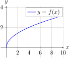

Just as we can with areas, we can attempt to find volumes using integrals as well. At the moment we can't find volumes of general regions without first describing integrals in higher dimensions, which is the content of Chapter 11. Until then, we'll need to restrict ourselves to so-called solids of revolution.
As an example, consider Figure 7.2.1. To generate the solid of revolution on the right, we take the graph of \(y = f(x)\) and rotate it about the \(x\)-axis, creating a three-dimensional region.

Figure7.2.1 Generating a solid of revolution.
To find the volume of such a region, the idea is to find the area of a general cross-section of the region, which by design should be a function of \(x\) alone, say \(A(x)\text{.}\) Then, roughly, \(A(x)\Delta x\) should represent the volume of a small cross-section of the solid, and so the integral \(\int_{a}^{b}A(x)\,dx\) should give us the volume of the region. This entire argument can be made precise using Riemann sums as in the previous section, and so we get the following: the solid \(S\) from \(x = a\) to \(x = b\) whose cross-sections (with respect to the \(x\)-axis) have area \(A(x)\) has volume given by
\begin{equation}
V = \int_{a}^{b}A(x)\,dx.\label{equation-solid-revolution-volume}\tag{7.2.1}
\end{equation}
Example7.2.2Finding the Volume of a Sphere
Find the volume of a sphere of radius \(r\text{.}\)
To begin, let's assume that the sphere is centered at the origin. Then each cross section perpendicular to the \(x\)-axis is just a circle with radius \(\sqrt{r^{2} - x^{2}}\text{.}\) Hence each cross-sectional area is given by \(A(x) = \pi(r^{2} - x^{2})\text{,}\) which means the volume of the sphere should be
Again, the idea for finding the volumes of these regions is to determine the cross-sectional areas perpendicular to the \(x\)-axis (or whatever the axis of rotation happens to be) and then integrate.
Example7.2.3
Find the volume of the region obtained by rotating the graph of \(y = \sqrt{x}\) from \(x = 1\) to \(x = 4\) about the line \(y = 2\text{.}\)
As is almost always the case, a good way to start is by graphing the region to get a rough idea of what it looks like. Doing so, we see that each of the cross-sections are circles. But this is to be expected, since the region is a solid of revolution. Given \(x\) between \(1\) and \(4\text{,}\) the area of the corresponding cross-section is given by
The previous problems involved finding volumes by using disks since disks were natural cross-sections. The next example instead uses washers as cross-sections instead. Although the formula we get for the volume is slightly different, it's still essentially integrating the areas of the cross-sections.
Example7.2.4
Find the volume of the solid obtained by rotating the region bounded by \(y = x\text{,}\) \(y = \sqrt{x}\) and \(y = 1\) about the line \(x = 2\text{.}\)
Since the axis of rotation is \(x = 2\text{,}\) we want to look at cross-sections perpendicular to this line, i.e., parallel to the \(x\)-axis. Each such cross-section will look like a washer, and hence its area will involve the inner radius and outer radius of the washer. Since the radii are measured in terms of horizontal distance, we'll need to find \(x\) in terms of \(y\text{.}\) Doing so, we see that the inner radius is given by \(2 - y\) while the outer radius is given by \(2 - y^{2}\text{.}\) Therefore the volume of the region is given by